Un guide pas à pas, très détaillé, pour comprendre et fabriquer ton jeu sur Scratch.
À chaque étape, tu vois les vrais blocs Scratch et on t'explique ce que fait chaque bloc, tout simplement.
🎮 D'abord : joue au jeu déjà fini !
Dans ce dossier, il y a le fichier Livre-de-Moutons.sb3 : c'est le jeu complet, déjà fabriqué. Regarde-le marcher, ça t'aidera à comprendre où tu vas.
Va sur scratch.mit.edu et clique Créer.
En haut à gauche, clique Fichier → Importer depuis votre ordinateur.
Choisis le fichier Livre-de-Moutons.sb3 (il est dans ce dossier).
Clique le drapeau vert 🟢 (en haut à droite). Pour voir en grand, clique l'icône plein écran (les 4 flèches en haut à droite de la scène).
Ouvre un booster : clique le paquet. Il se déchire 🎉 et 5 cartes surgissent une par une en se retournant (le dos se retourne pour montrer le mouton). Une carte nouvelle fait « ★ Nouvelle ! », un double fait monter le niveau.
Ta réserve de boosters : le petit chiffre doré sur le bouton « Booster » montre combien de paquets il te reste. À chaque paquet ouvert, il baisse de 1. Il se recharge tout seul avec le temps. Quand il est à 0, attends un peu !
Vois ta collection : clique le bouton Album 📖. C'est un vrai livre à pages : 6 grandes cartes par page. Utilise les flèches ◀ ▶ pour tourner les pages (les cartes glissent comme un livre qu'on tourne). Tes moutons obtenus ont leur badge de niveau ; les autres sont cachés derrière un dos de carte. En haut, le compteur X / 36. Clique une carte pour son nom, sa rareté et son niveau.
Maintenant que tu as vu le but, on va apprendre à en construire le cœur, petit morceau par petit morceau. (Les jolies animations, les sons et la réserve de boosters sont des bonus déjà tout prêts dans le jeu — tu pourras les explorer plus tard.)
🔍 Vérifie ton travail (dépose ton fichier .sb3)
Quand tu as fini une leçon (ou plusieurs), enregistre ton projet : dans Scratch, Fichier → Enregistrer sur votre ordinateur. Tu obtiens un fichier .sb3. Dépose-le ici : je regarde ce que tu as déjà fait et ce qu'il manque, leçon par leçon.
…ou glisse ton fichier ici
🔒 Tout se passe dans ton navigateur : ton fichier n'est pas envoyé sur Internet.
🧰 La boîte à outils de Scratch (à lire avant de coder)
🖥️ L'écran de Scratch — où est quoi ?
Voici comment est fait l'éditeur Scratch. Repère bien les 8 zones : on t'y renverra tout le temps (« clique le bouton Choisir un sprite », « va dans l'onglet Costumes »…).
1. Les onglets Code / Costumes / Sons — pour écrire le code, dessiner/importer les costumes, ou ajouter des sons.
2. La palette de blocs — les tiroirs de couleur (Mouvement, Apparence…). Tu attrapes un bloc ici.
3. La zone de code — la grande zone où tu glisses et emboîtes les blocs.
4. La scène — c'est là que le jeu s'affiche quand il tourne.
5. Le drapeau vert 🟢 (démarrer), le rond rouge 🔴 (arrêter), et l'icône plein écran ⤢ (en haut à droite de la scène).
6. La liste des sprites — tous tes personnages/objets (Carte, Paquet, boutons…).
7. Le bouton bleu « Choisir un sprite » — passe la souris dessus pour Peindre un nouveau sprite ou en importer un.
8. La Scène (à droite des sprites) — clique ici pour ajouter/changer les arrière-plans.
Les blocs sont rangés dans des tiroirs de couleur, sur le côté gauche. Un bloc se trouve toujours dans le tiroir de sa couleur :
Pour poser un bloc : attrape-le dans son tiroir avec la souris et fais-le glisser dans la grande zone blanche à droite (la « zone de code »). Quand deux blocs sont proches, une ombre grise apparaît : lâche, et ils s'emboîtent comme des Lego. 🧱
Pour changer un nombre ou un mot : clique dans la petite bulle blanche du bloc et tape ce que tu veux.
Pour créer une variable ou une liste : va dans le tiroir orange Variables, clique Créer une variable (ou Créer une liste), écris son nom, puis OK.
Pour lancer le programme : clique le drapeau vert 🟢. Pour tout arrêter : clique le rond rouge 🔴.
Trois mots à connaître : un sprite = un personnage/objet ; un costume = un dessin que le sprite peut porter ; un arrière-plan = le décor de la scène.
🔎 Gros plans : les 3 gestes qui reviennent tout le temps
A) Créer une variable (ou une liste)
1. Dans le tiroir Variables, clique « Créer une variable ».
2. Tape le nom (ex. dé).
3. Laisse coché « Pour tous les sprites ».
4. Clique OK. (Pour une liste : pareil, bouton « Créer une liste ».)
B) Importer un costume (un dessin)
1. Clique l'onglet Costumes (en haut à gauche).
2. Passe la souris sur l'icône costume (le rond bleu, tout en bas).
3. Clique « Importer un costume », puis choisis le fichier dans elements/….
➡️ Même principe pour un sprite (bouton « Choisir un sprite »), un arrière-plan (sur la Scène), ou un son (onglet Sons).
C) Créer un bloc perso (Mes Blocs)
1. Va dans le tiroir rose Mes Blocs.
2. Clique « Créer un bloc ».
3. Écris le nom : tirer une carte.
4. Clique OK : un chapeau « définir tirer une carte » apparaît — tu mets la recette dessous (Leçon 3).
🔺 Comment lire un bloc (sa forme te dit ce qu'il fait)
Avant de coder, apprends à reconnaître la forme d'un bloc. La forme, c'est comme la forme d'un panneau : elle t'indique à quoi il sert.
1. Le chapeau — arrondi en haut. Il démarre un script quand quelque chose arrive (drapeau cliqué…). Tout script commence par un chapeau.
2. La brique — encoches en haut et en bas. C'est une action. Les briques s'empilent et se font de haut en bas.
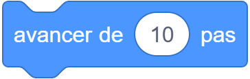
3. Le bloc en C — il entoure d'autres blocs, pour les répéter ou les faire seulement si une condition est vraie.
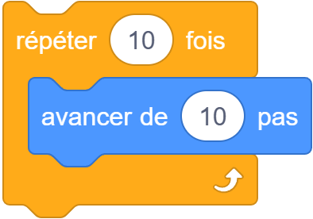
4. Le rapporteur (ovale) — il ne s'exécute pas tout seul : il donne une valeur (un nombre ou un mot) qu'on glisse dans le trou d'un autre bloc.
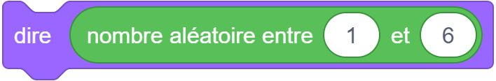
5. Le booléen (hexagone pointu) — il répond seulement oui ou non (vrai/faux). On le glisse dans le trou pointu d'un si.
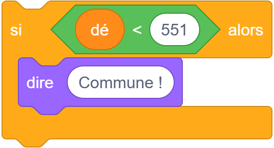
👉 Si tu sais lire les formes, tu peux deviner ce que fait un bloc, et comprendre pourquoi certains blocs rentrent dans d'autres (un ovale dans un trou rond, un hexagone dans un trou pointu).
🃏 Les 36 cartes et leurs raretés
Chaque carte a une rareté (la couleur du bandeau) et deux forces : ❤ le cœur et 🌿 la défense. Plus une carte est rare, plus elle est forte… mais plus elle est difficile à obtenir.
Arc-en-ciel — 1 carte(s) · 0.2% par tirage
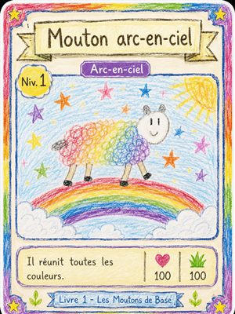
02 · Mouton arc-en-ciel ❤100 🌿100
Diamant — 2 carte(s) · 0.8% par tirage
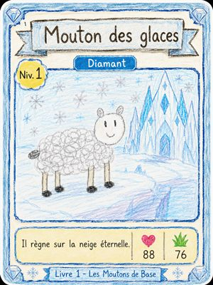
01 · Mouton des glaces ❤88 🌿76
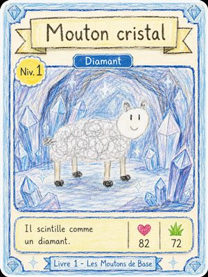
06 · Mouton cristal ❤82 🌿72
Dorée — 3 carte(s) · 2% par tirage
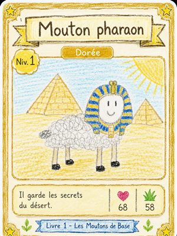
03 · Mouton pharaon ❤68 🌿58
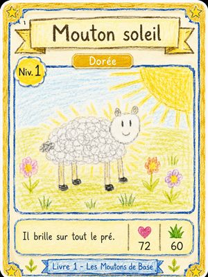
04 · Mouton soleil ❤72 🌿60
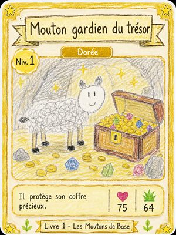
05 · Mouton gardien du tresor ❤75 🌿64
Légendaire — 4 carte(s) · 5% par tirage
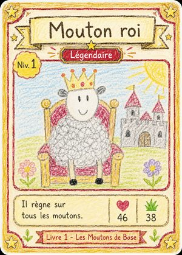
27 · Mouton roi ❤46 🌿38
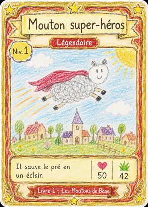
28 · Mouton super-heros ❤50 🌿42
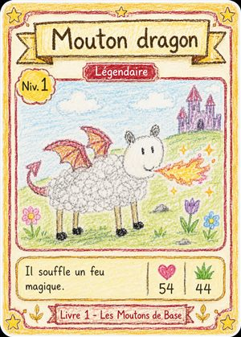
29 · Mouton dragon ❤54 🌿44
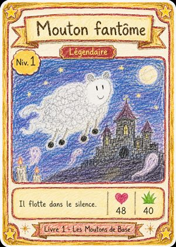
30 · Mouton fantome ❤48 🌿40
Épique — 6 carte(s) · 12% par tirage
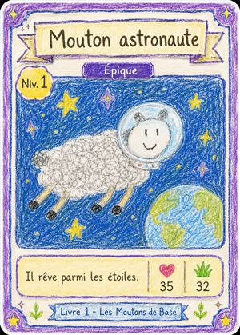
26 · Mouton astronaute ❤35 🌿32
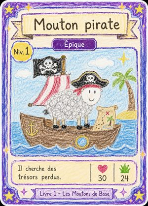
31 · Mouton pirate ❤30 🌿24
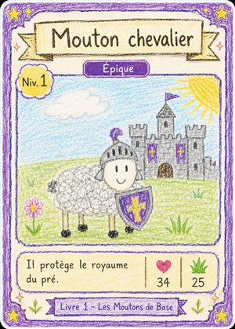
32 · Mouton chevalier ❤34 🌿25
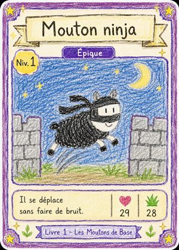
33 · Mouton ninja ❤29 🌿28
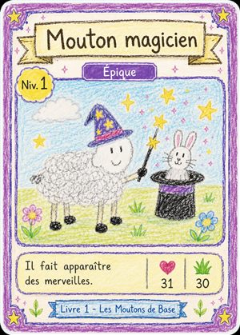
34 · Mouton magicien ❤31 🌿30
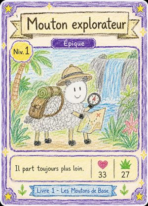
35 · Mouton explorateur ❤33 🌿27
Rare — 8 carte(s) · 25% par tirage
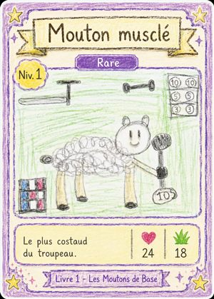
08 · Mouton muscle ❤24 🌿18
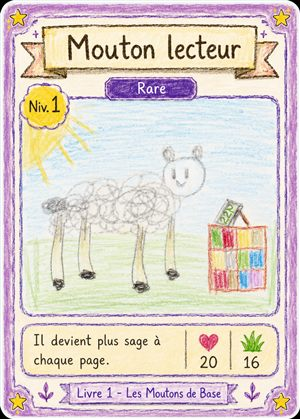
09 · Mouton lecteur ❤20 🌿16
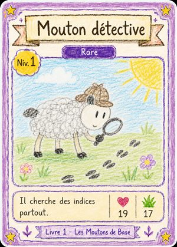
16 · Mouton detective ❤19 🌿17
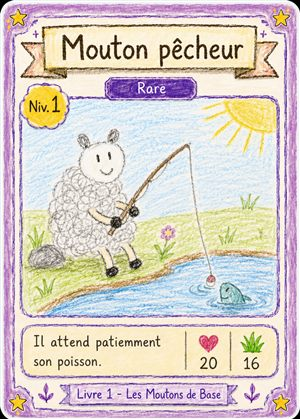
17 · Mouton pecheur ❤20 🌿16
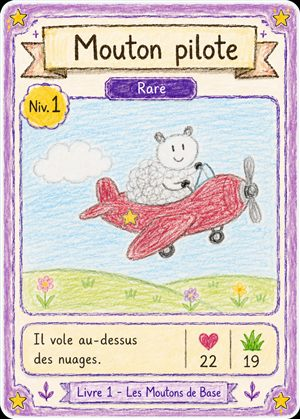
18 · Mouton pilote ❤22 🌿19
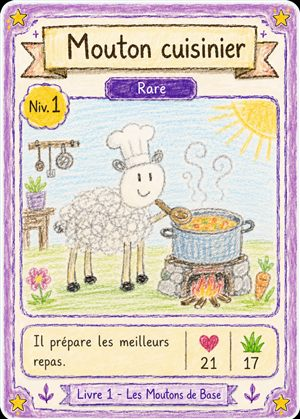
21 · Mouton cuisinier ❤21 🌿17
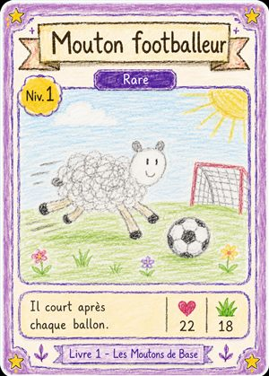
22 · Mouton footballeur ❤22 🌿18
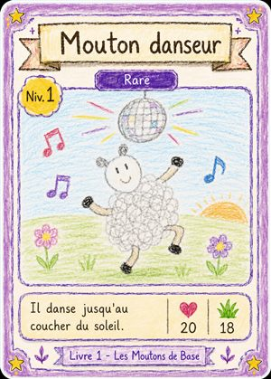
23 · Mouton danseur ❤20 🌿18
Commune — 12 carte(s) · 55% par tirage
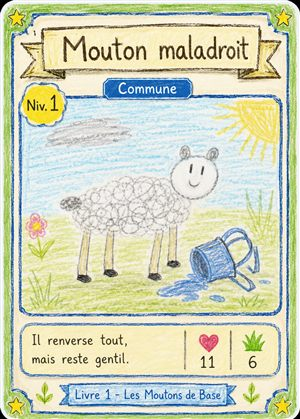
07 · Mouton maladroit ❤11 🌿6
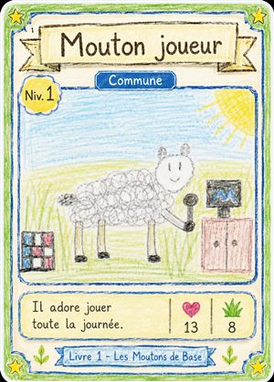
10 · Mouton joueur ❤13 🌿8
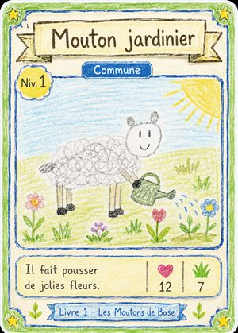
11 · Mouton jardinier ❤12 🌿7
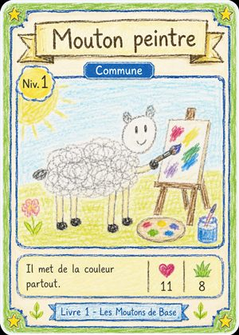
12 · Mouton peintre ❤11 🌿8
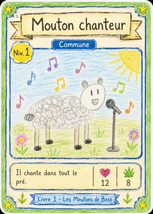
13 · Mouton chanteur ❤12 🌿8
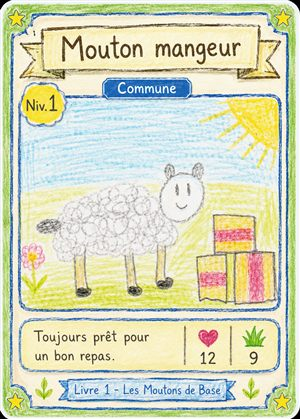
14 · Mouton mangeur ❤12 🌿9
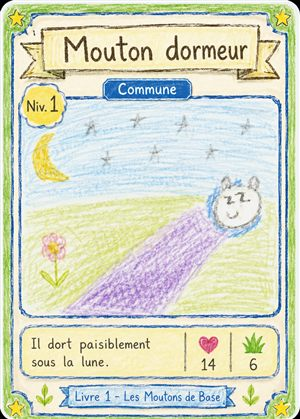
15 · Mouton dormeur ❤14 🌿6
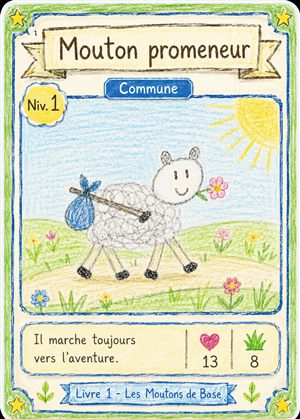
19 · Mouton promeneur ❤13 🌿8
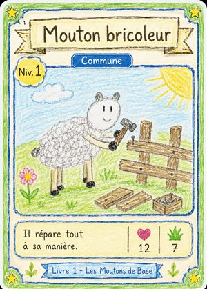
20 · Mouton bricoleur ❤12 🌿7
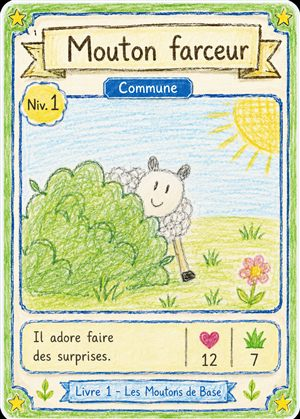
24 · Mouton farceur ❤12 🌿7
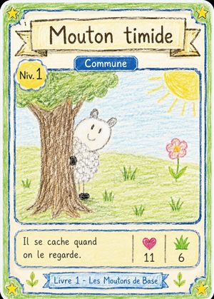
25 · Mouton timide ❤11 🌿6
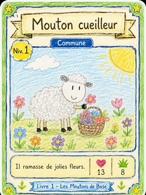
36 · Mouton cueilleur ❤13 🌿8
Combien de chances d'obtenir chaque carte ?
À chaque carte tirée, on choisit d'abord une rareté, puis une carte au hasard dedans :
Rareté
Nb cartes
Chance de la rareté
Une carte précise
Dé 1–1000
Arc-en-ciel
1
0.2%
1 sur 500
999–1000
Diamant
2
0.8%
1 sur 250
991–998
Dorée
3
2%
1 sur 150
971–990
Légendaire
4
5%
1 sur 80
921–970
Épique
6
12%
1 sur 50
801–920
Rare
8
25%
1 sur 32
551–800
Commune
12
55%
1 sur 22
1–550
« 1 sur 500 » veut dire : si tu tires 500 cartes, tu en auras en moyenne une seule arc-en-ciel. Parfois plus tôt, parfois plus tard : c'est ça, le hasard. C'est pour ça que les cartes rares font rêver !
📦 Les images du jeu (à importer dans Scratch)
Tous les dessins et les sons du jeu sont rangés dans le dossier elements/, à côté de ce tuto. Tu iras les chercher là quand une leçon te le demande.
Dossier
Ce qu'il contient
À quoi ça sert
elements/cartes/
Les 36 moutons + le dos de carte
Les costumes du sprite « Carte »
elements/paquet/
Paquet fermé et paquet ouvert
Les 2 costumes du sprite « Paquet »
elements/boutons/
Boutons Booster et Album
Les costumes des boutons
elements/fleches/
Flèches gauche et droite
Pour tourner les pages de l'album
elements/decors/
Décor booster, décor album, couverture
Les arrière-plans (Scène)
elements/pastilles/
Badges de niveau et chiffres
Petites images pour les niveaux et la réserve
elements/sons/
4 sons (pop, nouvelle carte, rare, déchirure)
Les sons du jeu
Comment importer une image ou un son
Un costume : choisis un sprite → onglet Costumes (en haut à gauche) → passe la souris sur l'icône 🐱⤴ (Choisir un costume) en bas → Importer un costume → va dans elements/… et choisis le fichier.
Un arrière-plan : clique la Scène (à droite) → onglet Arrière-plans → Importer un arrière-plan → prends un fichier de elements/decors/.
Un son : onglet Sons → Importer un son → prends un fichier de elements/sons/.
Astuce ordre : pour le sprite « Carte », importe les 36 cartes dans l'ordre (carte-01, carte-02, …). Le costume nº 7 doit être la carte nº 7 : comme ça, « basculer sur le costume (carte) » montre le bon mouton.
🛠️ Préparer ton projet (à faire en premier)
Avant de coder, on installe le terrain : un projet vide, le sprite des cartes avec ses 36 costumes, et les décors. Fais ces étapes dans l'ordre.
1. Nouveau projet
Va sur scratch.mit.edu → Créer.
Clic droit sur le chat (au milieu) → Supprimer : on n'en a pas besoin.
En haut, écris le nom du projet : Livre de Moutons.
2. Le sprite « Carte » et ses 36 costumes
C'est LE sprite qui montrera les moutons. On lui donne les 36 cartes comme costumes.
En bas à droite, passe la souris sur l'icône sprite 🐱 → Peindre (crée un sprite vide). Dans la case Sprite (en haut), renomme-le Carte.
Onglet Costumes (en haut à gauche) → passe la souris sur l'icône costume en bas → Importer un costume.
Va dans elements/cartes/ et importe carte-01, puis carte-02, … jusqu'à carte-36 — dans l'ordre, un par un.
Importe aussi dos-de-carte (il servira de dos ; il se met en dernier, costume nº 37).
S'il reste un costume blanc du départ, supprime-le (clic droit → supprimer).
⚠️ L'ordre compte énormément. Le costume nº 7 doit être la carte nº 7. Comme ça, plus tard, « basculer sur le costume (carte) » affiche le bon mouton.
3. Les décors (arrière-plans)
Clique la Scène (le grand carré blanc à droite) → onglet Arrière-plans.
Importer un arrière-plan → elements/decors/decor-booster. Renomme cet arrière-plan Accueil (dans la liste des arrière-plans).
Importe aussi decor-album et renomme-le Album.
📦 Créer les variables et les listes (avec les données)
Ce sont les boîtes qui retiennent le hasard et la collection. Tout se passe dans le tiroir orange Variables. Clique le sprite Carte d'abord.
1. Les variables
Clique Créer une variable → nom dé → « pour tous les sprites » → OK.
Recommence pour la variable carte.
Ces deux-là suffisent pour toutes les leçons de base. (Le jeu complet en ajoute d'autres — Collection, Boosters, page… — voir le chapitre « bonus » plus bas.)
2. Les listes
Clique Créer une liste (toujours « pour tous les sprites ») et crée ces 10 listes :
Liste
À quoi ça sert
noms
Les 36 noms de moutons, dans l'ordre
possede
Une case par carte : 0 = pas obtenue, 1 = obtenue
niveau
Le niveau de chaque carte
communes
Les numéros des cartes de chaque rareté (voir le tableau ci-dessous)
rares
epiques
legendaires
dorees
diamants
arcs
3. Remplir la liste « noms »
Coche la case de noms pour la voir sur la scène. Clique le petit + en bas de la liste et tape les 36 noms dans cet ordre exact (appuie sur Entrée entre chaque — ça crée la ligne suivante) :
Ligne
Nom à taper
(rareté, pour info)
1
Mouton des glaces
Diamant
2
Mouton arc-en-ciel
Arc-en-ciel
3
Mouton pharaon
Dorée
4
Mouton soleil
Dorée
5
Mouton gardien du tresor
Dorée
6
Mouton cristal
Diamant
7
Mouton maladroit
Commune
8
Mouton muscle
Rare
9
Mouton lecteur
Rare
10
Mouton joueur
Commune
11
Mouton jardinier
Commune
12
Mouton peintre
Commune
13
Mouton chanteur
Commune
14
Mouton mangeur
Commune
15
Mouton dormeur
Commune
16
Mouton detective
Rare
17
Mouton pecheur
Rare
18
Mouton pilote
Rare
19
Mouton promeneur
Commune
20
Mouton bricoleur
Commune
21
Mouton cuisinier
Rare
22
Mouton footballeur
Rare
23
Mouton danseur
Rare
24
Mouton farceur
Commune
25
Mouton timide
Commune
26
Mouton astronaute
Épique
27
Mouton roi
Légendaire
28
Mouton super-heros
Légendaire
29
Mouton dragon
Légendaire
30
Mouton fantome
Légendaire
31
Mouton pirate
Épique
32
Mouton chevalier
Épique
33
Mouton ninja
Épique
34
Mouton magicien
Épique
35
Mouton explorateur
Épique
36
Mouton cueilleur
Commune
4. Remplir les 7 listes de rareté
Dans chaque liste, tape ces numéros de cartes (un par ligne) :
Liste
Rareté
Numéros à taper (un par ligne)
communes
Commune
7, 10, 11, 12, 13, 14, 15, 19, 20, 24, 25, 36
rares
Rare
8, 9, 16, 17, 18, 21, 22, 23
epiques
Épique
26, 31, 32, 33, 34, 35
legendaires
Légendaire
27, 28, 29, 30
dorees
Dorée
3, 4, 5
diamants
Diamant
1, 6
arcs
Arc-en-ciel
2
💡 possede et niveau se remplissent tout seuls au démarrage (c'est la Leçon 1 juste après). Laisse-les vides pour l'instant.
🔨 On construit le jeu — leçon par leçon
Maintenant que le projet est prêt (sprite Carte, décors, variables, listes remplies), on ajoute le code. Ces scripts se mettent sur le sprite Carte. Chaque leçon suit le même plan : 🎯 le but, 📦 où trouver les blocs, l'image des blocs, 🔍 ce que fait chaque bloc, 💡 pourquoi, et ✅ un test. Prends ton temps, une leçon à la fois.
1 Remplir les listes quand on démarre
🎯 Ce qu'on veut faire : Au début de chaque partie, remettre à zéro la mémoire de ce qu'Alexandre possède, pour repartir proprement.
📦 Où trouver les blocs : « quand le drapeau vert est cliqué » est dans le tiroir jaune Événements. « supprimer… », « ajouter… », « répéter » : les listes sont dans le tiroir orange Variables, « répéter » dans l'orange Contrôle.
🖥️ Dans l'éditeur — sur le lutin « Carte », dans la zone de code
Mouvement
Apparence
Son
Événements
Contrôle
Capteurs
Opérateurs
Variables
Mes Blocs
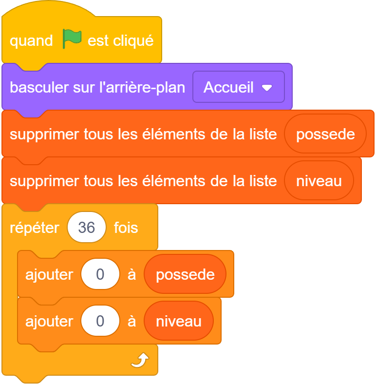
⚑ ⏹ ⤢Scène
🐑 Carte
🔍 Ce que fait chaque bloc (lis dans l'ordre, de haut en bas)
quand le drapeau vert est cliqué — C'est le départ. Dès qu'on clique le drapeau vert en haut de l'écran, Scratch lit ce bloc, puis tous les blocs accrochés en dessous, un par un.
supprimer tous les éléments de la liste (possede) — Il vide complètement la liste « possede ». Résultat : la liste ne contient plus rien du tout.
supprimer tous les éléments de la liste (niveau) — Pareil, il vide la liste « niveau ».
répéter (36) fois — C'est une boucle. Tout ce qui est à l'intérieur va se faire 36 fois de suite, tout seul. On l'utilise pour ne pas écrire 36 fois la même chose.
ajouter (0) à (possede) — À chaque tour de la boucle, il ajoute un « 0 » à la liste « possede ». Après 36 tours, la liste contient 36 zéros : une case par carte. 0 = « je n'ai pas encore cette carte ».
ajouter (0) à (niveau) — Pareil : après la boucle, « niveau » contient 36 zéros. Le niveau de départ d'une carte pas encore obtenue est 0.
💡 Pourquoi on fait ça
Un jeu doit pouvoir recommencer proprement. Si on ne vidait pas les listes, chaque clic sur le drapeau ajouterait encore 36 zéros par-dessus les anciens (72, puis 108…) et tout serait décalé. On vide d'abord, puis on remet 36 zéros bien nets.
✅ Teste que ça marche
Coche les cases à côté de « possede » et « niveau » dans le tiroir Variables pour les voir sur la scène. Clique le drapeau vert : les deux listes doivent afficher exactement 36 lignes de 0.
🐑 Astuce
Une boucle « répéter » est ta meilleure amie : elle fait le travail répétitif à ta place. Si un jour il y a 50 cartes, tu changes juste le 36 en 50.
2 Le dé du hasard (tirer un nombre)
🎯 Ce qu'on veut faire : Fabriquer un « dé » qui donne un nombre au hasard entre 1 et 1000. C'est lui qui décide si la carte sera commune ou rare.
📦 Où trouver les blocs : « nombre aléatoire entre » est un bloc vert du tiroir Opérateurs. « mettre … à » est un bloc orange du tiroir Variables.
🖥️ Dans l'éditeur — sur le lutin « Carte », dans la zone de code
Mouvement
Apparence
Son
Événements
Contrôle
Capteurs
Opérateurs
Variables
Mes Blocs
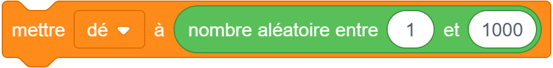
⚑ ⏹ ⤢Scène
🐑 Carte
🔍 Ce que fait chaque bloc (lis dans l'ordre, de haut en bas)
nombre aléatoire entre (1) et (1000) — Imagine un dé géant à 1000 faces. Ce bloc le lance et donne un nombre au hasard entre 1 et 1000. Tout seul, il n'agit pas : il donne juste un nombre, comme une réponse.
mettre [dé] à ( ) — Il prend le nombre donné par le dé géant et le range dans la boîte « dé ». À partir de là, la boîte « dé » contient ce nombre, et on pourra le regarder plus tard.
💡 Pourquoi on fait ça
On utilise 1000 (et pas 100) parce que la carte arc-en-ciel doit être très rare : on veut pouvoir lui donner seulement « 2 chances sur 1000 » (soit 0,2 %). Avec 100 faces, on ne pourrait pas descendre aussi bas.
✅ Teste que ça marche
Coche la case de « dé » pour l'afficher. Clique le drapeau vert plusieurs fois. Tu vois le nombre changer à chaque clic (par exemple 123, puis 742, puis 88). Le hasard fonctionne !
🐑 Astuce
Un bloc ovale vert comme « nombre aléatoire » se glisse dans le trou d'un autre bloc. Il ne se pose jamais tout seul : il donne toujours sa réponse à un autre bloc.
3 Tirer une carte : l'escalier des raretés
🎯 Ce qu'on veut faire : Selon le nombre du dé, choisir d'abord une RARETÉ, puis piocher une carte au hasard dans cette rareté. On range tout ça dans notre propre bloc « tirer une carte ».
📦 Où trouver les blocs : « définir tirer une carte » se crée dans le tiroir rose Mes Blocs (bouton « Créer un bloc »). Les « si … alors … sinon » sont dans l'orange Contrôle. « élément … de … » et « longueur de … » sont dans le tiroir Variables (avec les listes).
🖥️ Dans l'éditeur — sur le lutin « Carte », dans la zone de code
Mouvement
Apparence
Son
Événements
Contrôle
Capteurs
Opérateurs
Variables
Mes Blocs
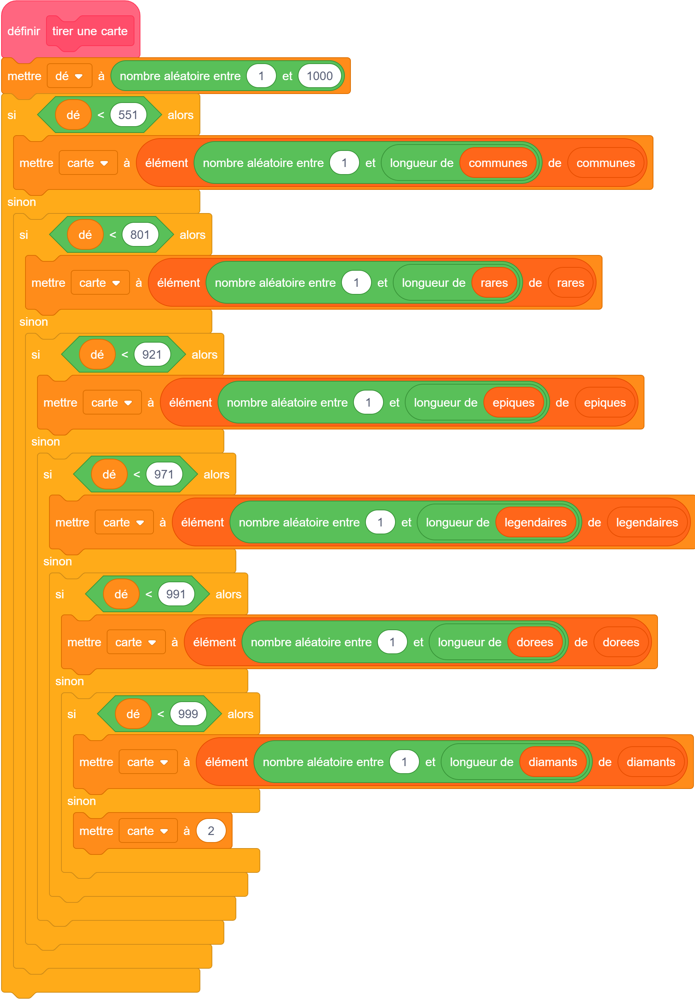
⚑ ⏹ ⤢Scène
🐑 Carte
🔍 Ce que fait chaque bloc (lis dans l'ordre, de haut en bas)
définir tirer une carte — C'est le titre de notre bloc fait maison. Tout ce qui est en dessous, c'est la recette de « tirer une carte ». Quand on utilisera ce bloc ailleurs, Scratch fera toute cette recette.
mettre [dé] à (nombre aléatoire entre 1 et 1000) — On relance le dé géant : la boîte « dé » reçoit un nouveau nombre au hasard.
si <(dé) < 551> alors … — On vérifie : est-ce que le dé est plus petit que 551 (donc entre 1 et 550) ? Si oui, la carte sera commune et on exécute ce qui est juste en dessous.
mettre [carte] à (élément (nombre aléatoire entre 1 et (longueur de communes)) de communes) — On pioche au hasard dans la liste « communes ». « longueur de communes » = combien il y a de communes (12). « nombre aléatoire entre 1 et 12 » = une ligne au hasard. « élément (…) de communes » = le numéro de carte rangé à cette ligne. Ce numéro va dans la boîte « carte ».
sinon … si <(dé) < 801> alors … — Si le dé n'était PAS < 551, on descend d'une marche : est-il < 801 (donc entre 551 et 800) ? Si oui → carte rare, on pioche dans « rares ».
… et ainsi de suite (921, 971, 991, 999) — On continue à descendre l'escalier : chaque marche teste une tranche de plus en plus rare (épique, légendaire, dorée, diamant). Dès qu'une réponse est « oui », on choisit la carte et on arrête de descendre.
sinon → mettre [carte] à (2) — Tout en bas de l'escalier, il n'y a plus rien à tester : c'est forcément l'arc-en-ciel. Il n'y a qu'une seule carte arc-en-ciel (la n°2), donc on met directement 2 dans « carte ».
💡 Pourquoi on fait ça
On choisit la rareté avant la carte. C'est ça qui rend les cartes rares vraiment rares : d'abord on décide « à quel point c'est rare » (avec le dé), puis on pioche équitablement parmi les cartes de ce niveau. Exactement comme les vrais paquets de cartes à collectionner.
✅ Teste que ça marche
Ajoute juste en dessous : « montrer la variable carte ». Utilise ton bloc « tirer une carte » (dans Mes Blocs) une fois, en cliquant dessus. La boîte « carte » doit afficher un numéro entre 1 et 36. Clique plusieurs fois : le plus souvent tu obtiens des petits numéros de communes, rarement les cartes spéciales.
🐑 Astuce
L'escalier « si … sinon si … » se lit comme des questions en cascade : « c'est en dessous de 551 ? Sinon, en dessous de 801 ? Sinon… ». C'est long à regarder, mais chaque marche fait une seule petite chose.
4 Nouvelle carte ou double ?
🎯 Ce qu'on veut faire : Une fois la carte tirée : si Alexandre ne l'a pas encore, elle rejoint l'album. S'il l'a déjà, le double fait MONTER la carte de niveau au lieu d'être perdu.
📦 Où trouver les blocs : « si … alors … sinon » : tiroir Contrôle. « remplacer l'élément … » : tiroir Variables (listes). « regrouper » : tiroir Opérateurs. « dire … pendant … secondes » : tiroir violet Apparence.
🖥️ Dans l'éditeur — sur le lutin « Carte », dans la zone de code
Mouvement
Apparence
Son
Événements
Contrôle
Capteurs
Opérateurs
Variables
Mes Blocs
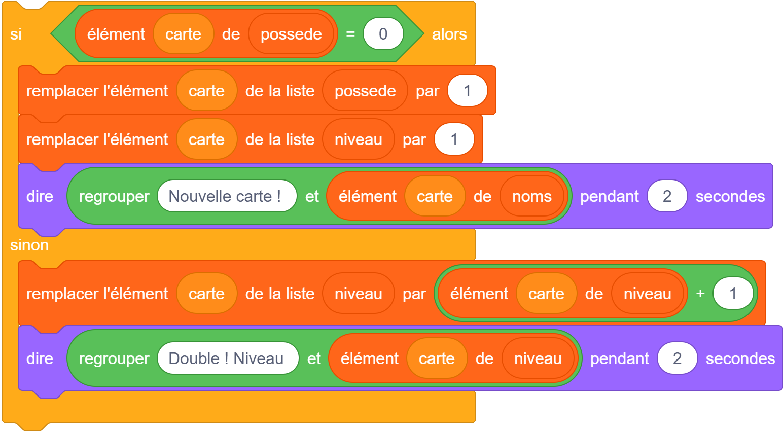
⚑ ⏹ ⤢Scène
🐑 Carte
🔍 Ce que fait chaque bloc (lis dans l'ordre, de haut en bas)
si <(élément (carte) de possede) = 0> alors — On regarde la case de cette carte dans « possede ». Si elle vaut 0, c'est qu'on ne l'a pas encore : on entre dans le « alors ».
remplacer l'élément (carte) de la liste (possede) par (1) — On écrit 1 à la place du 0 dans « possede », à la ligne de cette carte. Ça veut dire : « maintenant, je la possède ».
remplacer l'élément (carte) de la liste (niveau) par (1) — On met son niveau à 1 : c'est une carte toute neuve, elle démarre au niveau 1.
dire (regrouper [Nouvelle carte ! ] et (élément (carte) de noms)) pendant (2) secondes — « regrouper » colle deux morceaux de texte : « Nouvelle carte ! » + le nom de la carte (pris dans la liste « noms »). Le mouton l'annonce dans une bulle pendant 2 secondes.
sinon (on l'a déjà) — Si la case n'était pas 0, c'est qu'on possède déjà la carte : on va dans le « sinon ».
remplacer l'élément (carte) de (niveau) par ((élément (carte) de niveau) + 1) — On prend le niveau actuel de la carte et on ajoute 1. Le double n'est pas perdu : il rend la carte plus forte.
dire (regrouper [Double ! Niveau ] et (…)) pendant 2 secondes — Le mouton annonce « Double ! Niveau 2 » (ou 3, 4…) dans une bulle.
💡 Pourquoi on fait ça
Sans cette règle, tomber sur une carte qu'on a déjà serait décevant. Là, chaque double sert à quelque chose : il fait grimper le niveau. On a toujours envie d'ouvrir un nouveau paquet. C'est la règle préférée d'Alexandre — et elle tient en quelques blocs grâce aux listes.
✅ Teste que ça marche
Utilise « tirer une carte » puis ce bloc, deux fois de suite sur la même carte (tu peux forcer en mettant « mettre [carte] à 7 »). La première fois tu dois voir « Nouvelle carte ! », la deuxième « Double ! Niveau 2 ».
5 Le booster : 5 cartes d'un coup
🎯 Ce qu'on veut faire : Quand on clique sur le paquet, ouvrir 5 cartes à la suite : tirer, montrer, mettre l'album à jour, attendre un peu, et recommencer.
📦 Où trouver les blocs : « quand ce sprite est cliqué » : tiroir jaune Événements. « répéter » et « attendre » : orange Contrôle. « basculer sur le costume » et « montrer » : violet Apparence. « tirer une carte » : ton bloc dans Mes Blocs.
🖥️ Dans l'éditeur — sur le lutin « Carte », dans la zone de code
Mouvement
Apparence
Son
Événements
Contrôle
Capteurs
Opérateurs
Variables
Mes Blocs
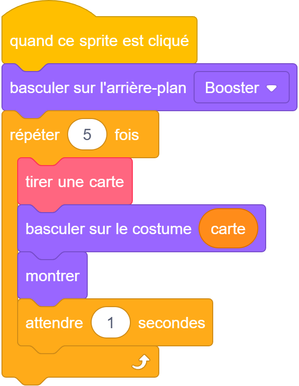
⚑ ⏹ ⤢Scène
🐑 Carte
🔍 Ce que fait chaque bloc (lis dans l'ordre, de haut en bas)
quand ce sprite est cliqué — Le départ de ce script : il se déclenche quand on clique sur le lutin du paquet de cartes.
répéter (5) fois — La boucle du booster : tout ce qui est dedans se fait 5 fois. Un booster = 5 cartes.
tirer une carte — C'est notre bloc de la leçon 3. Il relance le dé, choisit la rareté et range un numéro de carte dans la boîte « carte ».
basculer sur le costume (carte) — Le lutin prend le dessin numéro (carte). Comme le costume n°7 = la carte n°7, on voit apparaître le bon mouton à l'écran.
montrer — On rend le lutin visible (au cas où il était caché).
(mise à jour de l'album) — On fait la leçon 4 : nouvelle carte ou double, avec l'annonce dans la bulle.
attendre (1) secondes — Une petite pause pour laisser à Alexandre le temps de regarder la carte avant la suivante.
💡 Pourquoi on fait ça
Un booster, c'est 5 tirages indépendants, l'un après l'autre. La boucle « répéter 5 » rejoue exactement la même chose 5 fois, sans avoir à recopier le code. Si tu veux des paquets de 3 cartes, tu changes juste le 5 en 3.
✅ Teste que ça marche
Commence en mettant 1 à la place de 5, pour bien voir chaque étape sur une seule carte. Clique le paquet : une carte apparaît, la bulle parle. Quand tout marche, remets 5.
6 Montrer la carte et l'album
🎯 Ce qu'on veut faire : Afficher les cartes obtenues, et laisser les autres en « mystère » (une carte « ? »). C'est la page collection.
📦 Où trouver les blocs : Tout est dans Apparence (violet) et Contrôle (orange), avec les listes du tiroir Variables.
🖥️ Dans l'éditeur — sur le lutin « Carte », dans la zone de code
Mouvement
Apparence
Son
Événements
Contrôle
Capteurs
Opérateurs
Variables
Mes Blocs
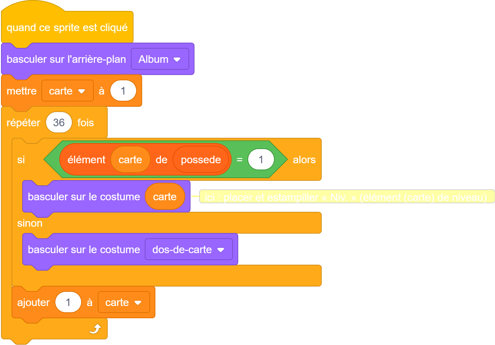
⚑ ⏹ ⤢Scène
🐑 Carte
🔍 Ce que fait chaque bloc (lis dans l'ordre, de haut en bas)
(on parcourt les cartes de 1 à 36) — On regarde chaque carte, une par une, comme si on tournait les pages.
si <(élément (n°) de possede) = 1> alors — Si on possède cette carte (sa case vaut 1)…
basculer sur le costume (n°) → montrer — …on affiche son vrai dessin à sa place dans la grille.
sinon → costume « mystère » — Sinon, on affiche une carte « ? » grise : la carte n'est pas encore trouvée.
💡 Pourquoi on fait ça
Le même petit bout de code sert pour les 36 cases, en changeant juste le numéro. Pour afficher joliment une grille de 6×6 cartes, le jeu fini utilise des clones (des copies du lutin, une par case) — c'est une technique un peu plus avancée, mais tu l'as déjà toute prête dans le fichier du jeu !
✅ Teste que ça marche
Dans le jeu fini (le fichier Livre-de-Moutons.sb3), clique le bouton Album : tu vois la grille, les cartes obtenues en couleur, les autres en « ? », avec le niveau sur chacune et le compteur « X / 36 ».
🐑 Astuce
N'essaie pas de construire les clones tout de suite. Fais d'abord marcher le tirage et le booster. L'album « joli » viendra après — et le jeu fini te montre déjà à quoi ça ressemble.
🚀 Le jeu complet — les leçons avancées
Les 6 leçons du dessus construisent le cœur du jeu (le tirage, le booster, l'album de base). Ces leçons-ci ajoutent tout le reste, lutin par lutin, avec les vrais blocs et le rôle de chacun — pour reproduire le jeu à l'identique. C'est plus dur : prends une leçon à la fois, et n'hésite pas à ouvrir le jeu fini à côté pour comparer.
📌 Rappel : chaque lutin se crée dans « Choisir un sprite → Peindre », se renomme, et reçoit ses costumes depuis le dossier elements/ (voir le chapitre « Les images du jeu »). Les messages (« reveler », « ouvrir album », « afficher page », « vider slots », « ouvrir booster ») se créent la 1ʳᵉ fois dans le bloc « envoyer à tous », menu Nouveau message.
7 Le sprite « Paquet »
🎬 Sur le lutin :Paquet — le paquet qu'on clique pour ouvrir un booster, + la recharge.
a) Au démarrage (drapeau vert)
Tout remettre à zéro et afficher le paquet.
🖥️ Dans l'éditeur — sur le lutin « Paquet », dans la zone de code
Mouvement
Apparence
Son
Événements
Contrôle
Capteurs
Opérateurs
Variables
Mes Blocs
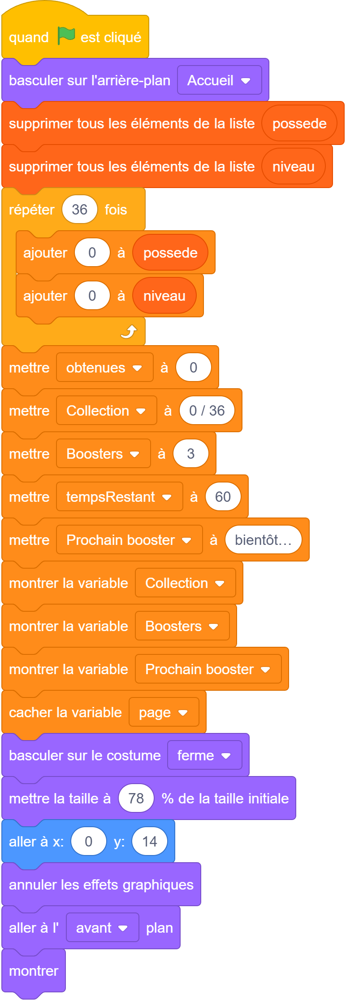
⚑ ⏹ ⤢Scène
🐑 Paquet
basculer sur l'arrière-plan (Accueil) — Affiche le décor du booster.
supprimer… puis répéter (36) : ajouter (0) — Vide et remet 36 zéros dans possede et niveau (comme la Leçon 1).
mettre (obtenues) à 0, (Collection) à « 0 / 36 » — Le compteur de collection repart à zéro.
mettre (Boosters) à 3, (tempsRestant) à 60 — On démarre avec 3 paquets ; le compte à rebours part de 60 s.
montrer / cacher la variable (…) — On affiche les compteurs Collection, Boosters, Prochain booster, et on cache « page » (utile seulement dans l'album).
costume (ferme) · taille · position · montrer — Le paquet fermé apparaît, bien placé au centre.
b) La recharge (un 2ᵉ script drapeau vert)
Regagner un booster avec le temps.
🖥️ Dans l'éditeur — sur le lutin « Paquet », dans la zone de code
Mouvement
Apparence
Son
Événements
Contrôle
Capteurs
Opérateurs
Variables
Mes Blocs
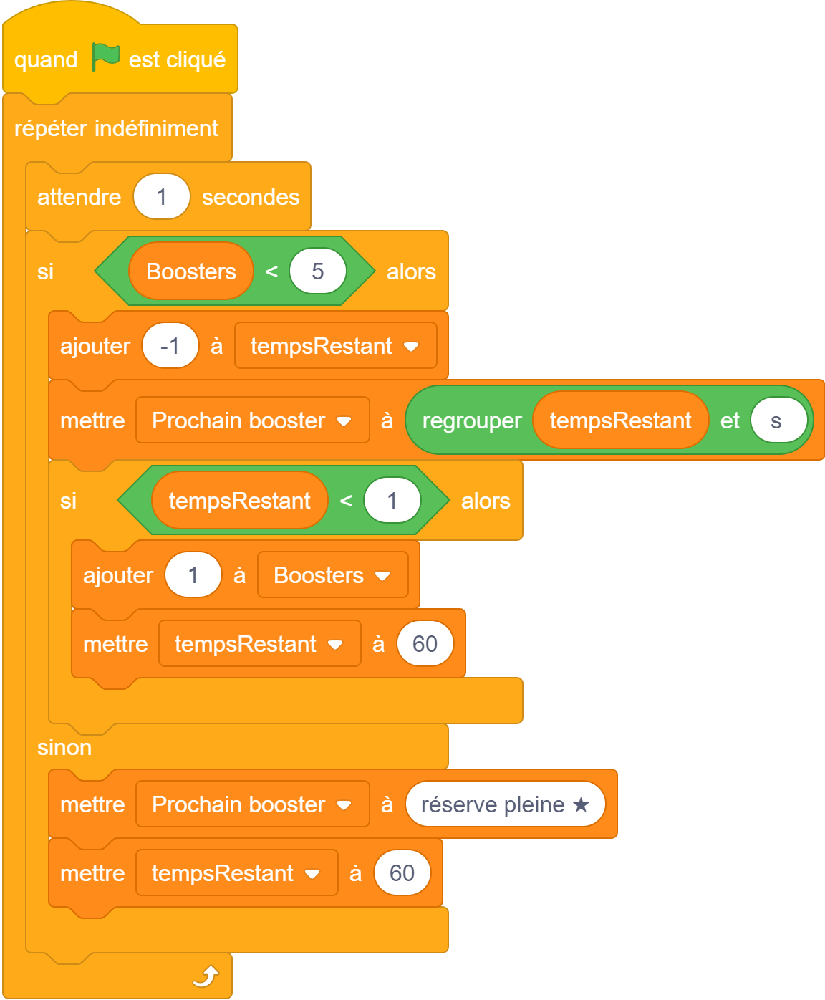
⚑ ⏹ ⤢Scène
🐑 Paquet
répéter indéfiniment · attendre (1) secondes — Une horloge : chaque seconde, on fait ce qui suit.
si (Boosters) < 5 — Tant que la réserve n'est pas pleine…
ajouter (-1) à (tempsRestant) — …le compte à rebours descend d'une seconde.
mettre (Prochain booster) à (regrouper (tempsRestant) et « s ») — On met à jour l'affichage « 45 s ».
si (tempsRestant) < 1 → +1 à (Boosters) et (tempsRestant) à 60 — À zéro, on gagne un booster et le compte à rebours repart.
sinon → (Prochain booster) « réserve pleine ★ » — Si on a déjà 5 paquets, plus besoin de compter.
c) Ouvrir le paquet (clic)
La déchirure + lancer la révélation.
🖥️ Dans l'éditeur — sur le lutin « Paquet », dans la zone de code
Mouvement
Apparence
Son
Événements
Contrôle
Capteurs
Opérateurs
Variables
Mes Blocs
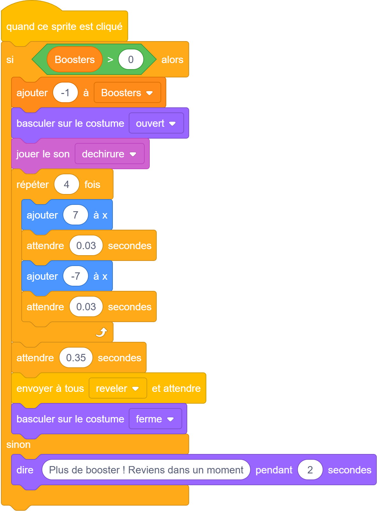
⚑ ⏹ ⤢Scène
🐑 Paquet
si (Boosters) > 0 — On n'ouvre que s'il reste au moins un paquet.
ajouter (-1) à (Boosters) — On en dépense un.
costume (ouvert) · jouer le son (déchirure) — Le paquet se déchire, avec le bruit.
répéter (4) : ajouter (7) à x, attendre, ajouter (-7) à x — Une petite secousse (le paquet tremble).
envoyer à tous (reveler) et attendre — On demande au sprite « Carte » de révéler les 5 cartes, et on attend qu'il finisse.
sinon → dire « Plus de booster ! » — S'il n'en reste plus, on prévient de revenir plus tard.
d) Changer d'écran
Deux petits scripts pour montrer/cacher les bons compteurs.
🖥️ Dans l'éditeur — sur le lutin « Paquet », dans la zone de code
Mouvement
Apparence
Son
Événements
Contrôle
Capteurs
Opérateurs
Variables
Mes Blocs
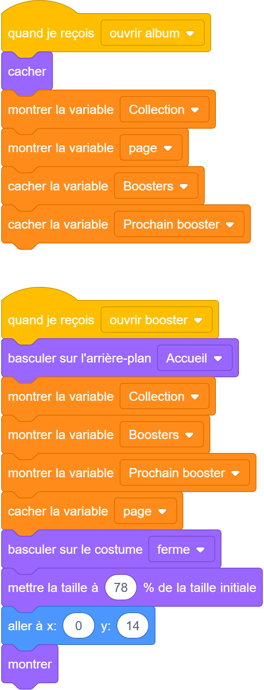
⚑ ⏹ ⤢Scène
🐑 Paquet
quand je reçois (ouvrir album) — On cache le paquet, on montre Collection + page, on cache Boosters + Prochain booster.
quand je reçois (ouvrir booster) — On remet le décor, on montre les compteurs booster, on cache « page », et on réaffiche le paquet.
8 La révélation des cartes (sprite « Carte »)
🎬 Sur le lutin :Carte — quand le Paquet envoie « reveler », on montre 5 cartes une par une, en 3 morceaux.
La structure d'ensemble
Une boucle « répéter 5 fois ». Pour chaque carte : tirer une carte, puis les 3 morceaux A, B, C ci-dessous.
🖥️ Dans l'éditeur — sur le lutin « Carte », dans la zone de code
Mouvement
Apparence
Son
Événements
Contrôle
Capteurs
Opérateurs
Variables
Mes Blocs
⚑ ⏹ ⤢Scène
🐑 Carte
tirer une carte — Notre bloc perso (Leçon 3) : il choisit un numéro de carte au hasard selon la rareté.
A) L'animation (le retournement)
🖥️ Dans l'éditeur — sur le lutin « Carte », dans la zone de code
Mouvement
Apparence
Son
Événements
Contrôle
Capteurs
Opérateurs
Variables
Mes Blocs
⚑ ⏹ ⤢Scène
🐑 Carte
costume (dos) — On montre d'abord le DOS de la carte.
taille 50 % · aller à x:0 y:-120 · montrer — La carte apparaît petite, en bas (près du paquet).
glisser en 0.18 s à x:0 y:15 — Elle GLISSE vers le centre.
répéter (6) : ajouter (-7) à la taille — Elle rétrécit très vite, comme si elle se mettait de profil…
costume (carte) · jouer le son (pop) — …on bascule sur la FACE (le vrai mouton) avec un « pop » : c'est le retournement !
répéter (10) : ajouter (8) à la taille · taille 88 % — Elle regrossit : la carte est révélée en grand.
B) L'effet des cartes rares
🖥️ Dans l'éditeur — sur le lutin « Carte », dans la zone de code
Mouvement
Apparence
Son
Événements
Contrôle
Capteurs
Opérateurs
Variables
Mes Blocs
⚑ ⏹ ⤢Scène
🐑 Carte
mettre (rar) à (élément (carte) de raretes) — On lit la rareté de la carte tirée.
si (rar) n'est PAS « Commune » ET PAS « Rare » — Donc si c'est une carte spéciale (épique, légendaire, dorée, diamant, arc-en-ciel)…
jouer le son (rare) · répéter : ajouter à l'effet couleur — …un son spécial et un scintillement de couleurs, puis on annule l'effet.
C) L'album : nouvelle ou double
C'est la Leçon 4, avec en plus le compteur Collection.
🖥️ Dans l'éditeur — sur le lutin « Carte », dans la zone de code
Mouvement
Apparence
Son
Événements
Contrôle
Capteurs
Opérateurs
Variables
Mes Blocs
⚑ ⏹ ⤢Scène
🐑 Carte
si pas encore possédée (= 0) — On la marque obtenue (1), niveau 1, +1 à (obtenues), on met à jour (Collection), un son de victoire, et on annonce « Nouvelle ! ».
sinon (déjà possédée) — Le double fait monter le niveau de 1, et on annonce « Double ! niv. X ».
9 L'album en pages (sprite « Slot »)
🎬 Sur le lutin :Slot — 6 cartes par page, avec des CLONES. C'est la partie la plus astucieuse.
a) Ouvrir l'album
🖥️ Dans l'éditeur — sur le lutin « Slot », dans la zone de code
Mouvement
Apparence
Son
Événements
Contrôle
Capteurs
Opérateurs
Variables
Mes Blocs
⚑ ⏹ ⤢Scène
🐑 Slot
quand je reçois (ouvrir album) · si (estClone) = 0 — « estClone = 0 » = je suis l'ORIGINAL, pas une copie. Seul l'original prépare l'album (sinon on aurait des copies de copies).
arrière-plan (Album) · (page) à 1 · (slideDir) à 1 — On affiche la page du livre, on commence à la page 1, et on glissera depuis la droite.
envoyer à tous (afficher page) — On demande d'afficher la page courante.
b) Afficher une page (6 cartes)
🖥️ Dans l'éditeur — sur le lutin « Slot », dans la zone de code
Mouvement
Apparence
Son
Événements
Contrôle
Capteurs
Opérateurs
Variables
Mes Blocs
⚑ ⏹ ⤢Scène
🐑 Slot
si (estClone) = 0 · répéter (6) fois — L'original fabrique les 6 emplacements de la page.
mettre (posi) à (i − 1) — La position sur la page (0 à 5).
mettre (monSlot) à ((page−1) × 6 + i) — Le vrai numéro de carte. Page 1 → cartes 1 à 6 ; page 2 → 7 à 12 ; etc.
créer un clone de (moi-même) — On fabrique une copie qui deviendra une carte affichée.
c) Chaque carte affichée (le clone)
🖥️ Dans l'éditeur — sur le lutin « Slot », dans la zone de code
Mouvement
Apparence
Son
Événements
Contrôle
Capteurs
Opérateurs
Variables
Mes Blocs
⚑ ⏹ ⤢Scène
🐑 Slot
quand je commence comme un clone · (estClone) à 1 — Cette copie sait qu'elle est un clone.
(c) à (posi mod 3) · (r) à (plancher de posi/3) — On calcule sa colonne (0,1,2) et sa rangée (0,1) dans la grille 3×2.
si possédée → costume (monSlot) ; sinon → costume (dos) — Si on a la carte, on montre le dessin ; sinon le dos de carte (mystère).
aller à x: (… + slideDir × 480) · glisser en 0.28 s à sa place — Elle démarre HORS de l'écran (côté droit) puis GLISSE à sa place : l'effet « page qui se tourne ».
d) Effacer + cliquer une carte
🖥️ Dans l'éditeur — sur le lutin « Slot », dans la zone de code
Mouvement
Apparence
Son
Événements
Contrôle
Capteurs
Opérateurs
Variables
Mes Blocs
⚑ ⏹ ⤢Scène
🐑 Slot
quand je reçois (vider slots) → supprimer ce clone — Avant de changer de page, on efface les cartes actuelles (chaque clone se supprime).
quand ce sprite est cliqué → dire les infos — Cliquer une carte affiche son nom et sa rareté (si on la possède).
10 Les badges de niveau (sprite « Niveau »)
🎬 Sur le lutin :Niveau — un petit badge sur chaque carte obtenue. Même principe de clones que l'album.
a) Créer les badges de la page
🖥️ Dans l'éditeur — sur le lutin « Niveau », dans la zone de code
Mouvement
Apparence
Son
Événements
Contrôle
Capteurs
Opérateurs
Variables
Mes Blocs
⚑ ⏹ ⤢Scène
🐑 Niveau
pour chaque carte de la page, si possédée → créer un clone — Un badge par carte obtenue seulement.
b) Chaque badge (le clone)
🖥️ Dans l'éditeur — sur le lutin « Niveau », dans la zone de code
Mouvement
Apparence
Son
Événements
Contrôle
Capteurs
Opérateurs
Variables
Mes Blocs
⚑ ⏹ ⤢Scène
🐑 Niveau
mettre (lvl) à (élément (bSlot) de niveau) — Le niveau de cette carte.
si (lvl) > 9 → costume (9plus) ; sinon → costume (lvl) — On choisit la pastille : « 1 » à « 9 », ou « 9+ » au-delà.
aller au coin de la carte + glisser — Le badge se place dans le coin de sa carte, en glissant comme elle.
11 La réserve de boosters (sprite « Reserve »)
🎬 Sur le lutin :Reserve — le petit chiffre sur la pièce du bouton Booster.
🖥️ Dans l'éditeur — sur le lutin « Reserve », dans la zone de code
Mouvement
Apparence
Son
Événements
Contrôle
Capteurs
Opérateurs
Variables
Mes Blocs
⚑ ⏹ ⤢Scène
🐑 Reserve
se placer sur la pièce · aller au premier plan — On pose la pièce sur le bouton Booster, devant tout.
répéter indéfiniment : costume ((Boosters) + 1) — Les costumes 1 à 10 sont les chiffres 0 à 9. « Boosters + 1 » choisit le bon chiffre. Comme c'est une boucle, le chiffre suit toujours la réserve.
12 La couverture de l'album (sprite « Cover »)
🎬 Sur le lutin :Cover — la belle couverture qui apparaît un instant quand on ouvre l'album.
🖥️ Dans l'éditeur — sur le lutin « Cover », dans la zone de code
Mouvement
Apparence
Son
Événements
Contrôle
Capteurs
Opérateurs
Variables
Mes Blocs
⚑ ⏹ ⤢Scène
🐑 Cover
quand je reçois (ouvrir album) : montrer, attendre 0.55 s, cacher — La couverture s'affiche brièvement puis laisse place à la grille : on « ouvre le livre ».
quand je reçois (ouvrir booster) : cacher — On la cache quand on retourne au booster.
13 Les boutons Booster / Album
🎬 Sur le lutin :Booster et Album — deux boutons quasi identiques (change juste le message envoyé).
Exemple du bouton « Booster ». Le bouton « Album » est pareil, mais envoie « ouvrir album ».
🖥️ Dans l'éditeur — sur le lutin « Booster et Album », dans la zone de code
Mouvement
Apparence
Son
Événements
Contrôle
Capteurs
Opérateurs
Variables
Mes Blocs
⚑ ⏹ ⤢Scène
🐑 Booster et Album
quand le drapeau vert pressé : se placer, se montrer — Le bouton apparaît en bas de l'écran.
quand ce sprite est cliqué : envoyer (vider slots) et attendre, puis (ouvrir booster) — On efface d'abord la page de l'album, puis on change d'écran.
14 Les flèches ◀ ▶ (sprites « Prec » / « Suiv »)
🎬 Sur le lutin :Prec et Suiv — tourner les pages de l'album.
Exemple de la flèche « Suivant ». « Précédent » est pareille, mais teste (page > 1), fait (page − 1) et met (slideDir) à −1.
🖥️ Dans l'éditeur — sur le lutin « Prec et Suiv », dans la zone de code
Mouvement
Apparence
Son
Événements
Contrôle
Capteurs
Opérateurs
Variables
Mes Blocs
⚑ ⏹ ⤢Scène
🐑 Prec et Suiv
quand je reçois (ouvrir album) / (ouvrir booster) : se montrer / se cacher — Les flèches n'apparaissent que dans l'album.
quand ce sprite est cliqué : si (page) < 6 — On ne va à la page suivante que s'il en reste une.
envoyer (vider slots) et attendre · (slideDir) à 1 · +1 à (page) · envoyer (afficher page) — On efface la page, on choisit le sens du glissement, on change de page, et on l'affiche.
🪜 Par où commencer (pour ne pas se décourager)
Étape A. Fais marcher 1 carte : le dé + montrer un mouton. Rien d'autre.
Étape B. Ajoute les raretés (l'escalier) avec 2 ou 3 raretés seulement pour commencer.
Étape C. Passe aux 36 cartes et aux 7 raretés avec les listes.
Étape D. Ajoute le booster de 5 et la règle nouvelle / double.
Étape E. Regarde comment le jeu fini fait l'album, les sons et les animations, et amuse-toi à changer des choses.
💛 Un jeu qui marche à moitié mais que tu comprends vaut mieux qu'un gros jeu copié que tu ne sais pas réparer. Teste après chaque petit ajout : si ça casse, tu sais que ça vient de la dernière chose que tu as mise.